Inhalt Index DeskTop Bronstein

 Geometrie Vektoralgebra und analytische Geometrie Analytische Geometrie der Ebene Kurven 2. Ordnung (Kegelschnitte)
Geometrie Vektoralgebra und analytische Geometrie Analytische Geometrie der Ebene Kurven 2. Ordnung (Kegelschnitte)


| Größen |
Gestalt der Kurve | ||
| Mittelpunktskurven 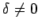 |
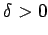 | 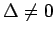 | Ellipse a) für 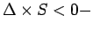 reell b) für 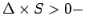 imaginär*2 |
| Ein Paar imaginäre*2Geraden mit reellem Punkt |
|||
| 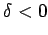 | Hyperbel | ||
| Ein Paar sich schneidender Geraden | |||
| Notwendige Koordinatentransformation | Normalform der Gleichung nach Transformation |
| 1. Verschiebung des Koordinatenursprungs in den Kurvenmittelpunkt, dessen Koordinaten 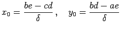 sind. |
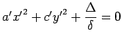 |
| 2. Drehung der Koordinatenachsen um den Winkel Das Vorzeichen von 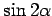 muß mit dem Vor- zeichen von 2b übereinstimmen. Hierbei ist der Richtungskoeffizient der neuen x'-Achse 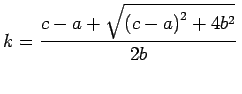. |
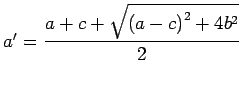 |
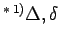 und S sind gemäß (3.375b) Zahlen.
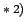 Der Kurvengleichung entspricht eine imaginäre Kurve.